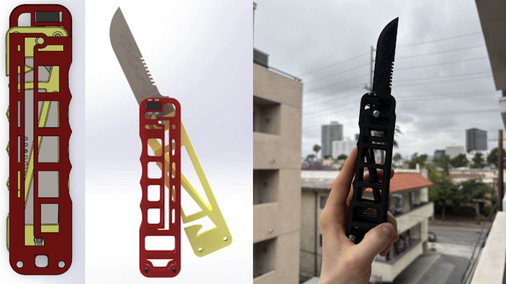
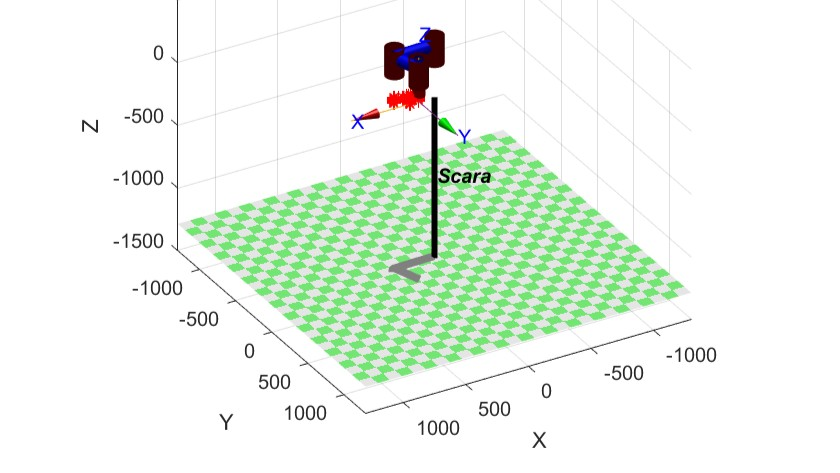

Hi, I'm Jessica! I am a robotics engineer who loves building systems that move with intention. I specialize in simulation, control, and mechanical prototyping. I earned my M.S. in Mechanical and Aerospace Engineering from UCLA and my B.S.E. in Mechanical Engineering from Duke University. I currently contribute to the UCLA Robotics and Mechanisms Lab, where I work on humanoid motion validation and safety through simulation. My experience spans from soft robotic actuators to quadruped locomotion and industrial robot simulation. Take a look at some of my experience below!
Projects
Your browser does not support the video tag.
Quadruped Robot - The Meow Machine
Built a 4-legged robotic cat with 3D-printed limbs and Raspberry Pi-based wireless control for dynamic locomotion.
Designed and 3D-printed articulated leg linkages inspired by feline motion
Programmed servo actuation and gait logic in Python
Enabled wireless SSH access for live debugging and control
Your browser does not support the video tag.
Modular Assembling Robot System
Created self-assembling modular robots using Arduino, magnetic alignment, and AprilTag-based vision localization.
Fabricated magnetically aligning modules with autonomous docking capability
Used AprilTags with OpenCV for real-time localization and alignment
Developed wireless communication with WiFi-enabled Arduinos
Your browser does not support the video tag.
Training a Custom Humanoid to Walk
IEEE Publication!!!
Your browser does not support the video tag.
Color Sorting Robot Simulation
Simulated a Panda robot that sorts colored objects using ROS, Gazebo, and MoveIt.
Integrated ROS nodes with Gazebo for real-time robot simulation
Implemented OpenCV-based color detection and object segmentation
Used MoveIt for motion planning, collision avoidance, and pick-and-place
Your browser does not support the video tag.
Walking Quadruped RL Training
Trained a MuJoCo quadruped to walk using reinforcement learning techniques.
Created a URDF and MuJoCo-compatible XML model from CAD
Developed a custom Gym environment and trained using PPO (StableBaselines3)
Achieved a functional walking step policy validating RL-driven locomotion
Your browser does not support the video tag.
Candle Lighting Robot
Engineered a 4-DOF robot arm to locate and light candles using computer vision and a PD controller.
Developed inverse kinematics and gravity-compensated PD control for precision
Generated dynamic trajectories with <1° tracking error
Built a visual servoing pipeline using OpenCV to locate wicks in 3D
Your browser does not support the video tag.
Chess Playing Robot
Built a 4-DOF robot capable of autonomous chess gameplay using inverse kinematics and a custom gripper.
Designed a claw end-effector to manipulate chess pieces
Programmed IK-based motion planning for chessboard locations
Developed adjustable modular arms to accommodate board variations
Your browser does not support the video tag.
Opening Doors
Mujoco robot opens door
3D Printed Building Blocks
Designed and fabricated miniature toy building blocks in SolidWorks and 3D printed them for functional testing.
Modeled standard toy block geometries with precise dimensional tolerances to achieve stackable press-fit connections.
Converted CAD models into STL files and optimized print orientation and layer height for dimensional accuracy.
Validated prints by testing alignment, fit, and interlocking strength against commercial bricks.

The Butterfly Blade
Fabricated a folding blade mechanism with a custom locking design and artistic features.
Completed two full prototyping cycles to optimize fit, finish, and performance
Utilized SolidWorks topology tools and modular CAD for FDM printing
Final design includes a functional blade, snack dispenser, and laser-etched artwork
Flexure-Based Micro-Mirror
Designed and analyzed a MEMS-scale mirror supported by flexures for precision motion.
Used FACT to design a wire flexure minimizing parasitic motion
Simulated performance and resonant behavior via MATLAB and FEA
Proposed an SOI-based MEMS fabrication flow with gold coating for optics
Drone Repair
Duke drone repairs
Magnetic Levitation System
Designed a closed-loop MagLev system stabilized by PID control and electromagnetics.
Derived nonlinear plant model and linearized system for control design
Tuned PID controller in MATLAB using Ziegler–Nichols and simulation testing
Demonstrated robust levitation of diverse object shapes under various inputs
Validated system stability and efficiency with low overshoot and fast response
Automated Halloween Candy Dispenser
Built a themed candy dispenser with automated delivery, sound, and lighting effects.
Designed a weather-resistant enclosure with modular electronics
Used Arduino Nano to control motor, LEDs, speaker, and button trigger
Created a fun user interface with clown-themed visual/audio feedback
Achieved reliable dispensing within a $100 budget, with a cost of $53.66
Webcam Calibration Pipeline
Calibrated a standard laptop camera using OpenCV to correct lens distortion.
Captured checkerboard images and extracted corner features
Used OpenCV to compute distortion coefficients and undistort images
Verified calibration accuracy with a re-projection error of 0.0421 pixels
Exported camera matrix and parameters for future computer vision tasks
Candle Wick Detection System
Developed a color-based computer vision pipeline for candle wick localization.
Processed webcam images with HSV color masking to isolate wick color
Identified centroid of the largest color region for localization
Transformed pixel coordinates to 3D space using camera calibration data

SCARA Robot Trajectory Optimization
Simulated joint and task space trajectories for a SCARA robot to optimize performance.
Generated position, velocity, and acceleration profiles for each method
Verified motion feasibility and collision avoidance using elevated via points
Demonstrated joint space control as 18× faster due to smoother actuation
Soft Gripper Simulation (Parallel End-Effector)
Simulated soft robotic gripping of fruit using contact modeling and elastic beam physics.
Applied the Modified Mass Method to simulate realistic contact forces
Modeled beams as tension, compression, and torsion springs
Analyzed contact nodes, deformation, and stress across different object types
Explored effects of stiffness and fruit geometry on grip effectiveness
Created a modular simulation framework for material and shape tuning
PWM Motor Speed Controller
Built a MOSFET-based PWM motor controller using a 555 timer circuit.
Generated PWM signals with adjustable duty cycle via potentiometer
Regulated DC motor speed with real-time voltage control
Verified output waveform and linear motor response using an oscilloscope
Achieved cost-effective motor control with minimal components
Miniature Boat Model
Designed and 3D-printed a micro boat model to test fine detail in CAD-to-print workflows.
Modeled a sub-1 inch press-fit sailboat using SolidWorks
Validated print fidelity and structural integrity of micro features
Post-processed final model into a detailed keychain-sized boat
Skills
ROS / ROS2
URDFs
Isaac Sim
Gazebo
MuJoCo
RViz
MoveIt
OpenAI Gym
Python
C++
MATLAB
Linux
Git / GitHub
Docker
Conda / Virtual Environments
SolidWorks / CAD
Arduino
Raspberry Pi
Machining
3D Printing
Circuit Design


{kind=link}
{kind=link}
{kind=link}
{kind=link}
{kind=link}
{kind=link}
{kind=link}
{kind=link}
{kind=link}